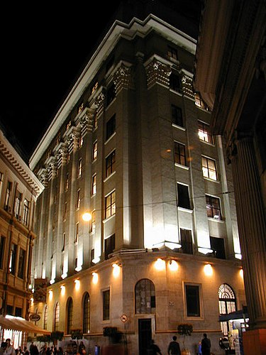
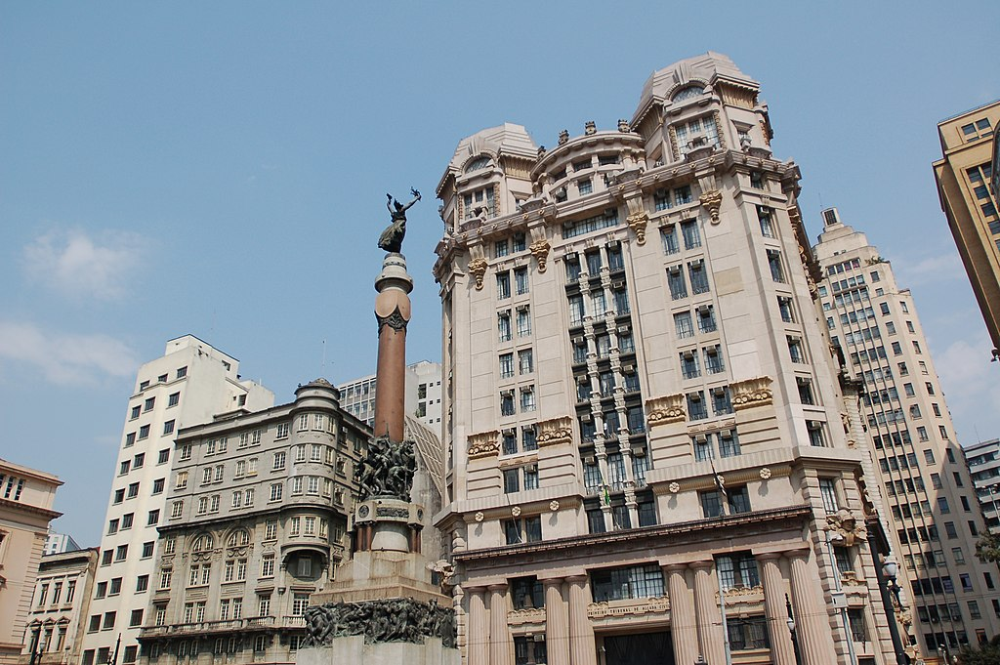
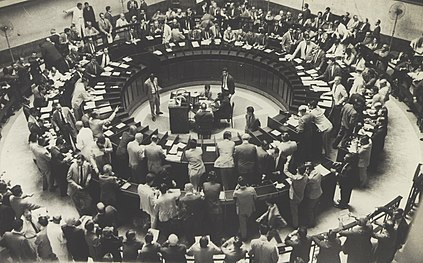
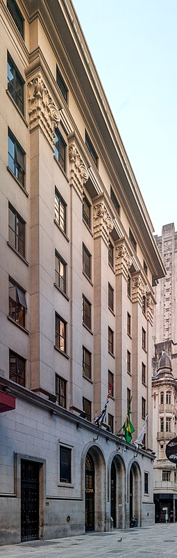
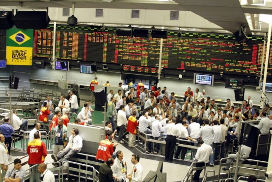
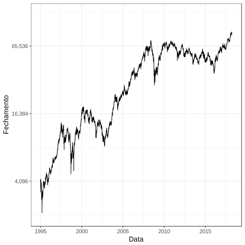

B3 (bolsa de valores do Brasil)
A B3 (estilizado como [B]³ em referência às letras iniciais de Brasil, Bolsa, Balcão) é uma bolsa de valores brasileira sediada na cidade de São Paulo. Funciona de forma autorregulada sob a supervisão da Comissão de Valores Mobiliários (CVM) e seu indicador de referência é o Ibovespa.
Além da sede localizada no centro da capital paulista na Praça Antônio Prado, a B3 mantém outras unidades na avenida Faria Lima e em Alphaville. Também possui escritórios de representação em Londres e em Xangai, para oferecer suporte aos participantes desses mercados nas atividades com os clientes estrangeiros e no relacionamento com os órgãos reguladores, além de divulgar seus produtos e práticas de governança a potenciais investidores.
Em 2017, era a quinta maior bolsa de mercado de capitais e financeiro do mundo, com patrimônio de 13 bilhões de dólares. O recorde histórico de maior valor de mercado ocorreu em 29 de agosto de 2014, quando as então 328 companhias listadas valiam 2,595 trilhões de reais.
História
Em 23 de agosto de 1890 foi fundada pelo presidente Emílio Rangel Pestana a Bolsa Livre, que seria o embrião da Bolsa de Valores de São Paulo (Bovespa). A Bolsa Livre encerrou suas atividades em 1891, em decorrência da política do Encilhamento. Quatro anos depois, em 1895, foi aberta a Bolsa de Fundos Públicos de São Paulo, que deu continuidade à evolução do mercado de capitais brasileiro. No ano de 1934, instalou-se no Palácio do Café, localizado próximo ao Pátio do Colégio. No ano seguinte, seu nome foi alterado para Bolsa Oficial de Valores de São Paulo.
Até meados da década de 1960, a Bovespa e as demais bolsas brasileiras eram entidades oficiais corporativas, vinculadas às secretarias de finanças (atuais Secretarias da Fazenda estaduais). Eram 27 bolsas de valores em todo o Brasil, dos governos estaduais e compostas por corretores nomeados pelo poder público. Com as reformas do sistema financeiro nacional e do mercado de capitais que foram implementadas nos anos de 1965 e 1966, as bolsas assumiram a característica institucional, transformando-se em associações civis sem fins lucrativos, com autonomia administrativa, financeira e patrimonial. Em 1967, a entidade passou a ser denominada Bolsa de Valores de São Paulo.
Integração das bolsas e surgimento da Bovespa
Desde o início dos mercado de capitais no Brasil, durante a fase final do período colonial, a Bolsa de Valores do Rio de Janeiro foi o grande mercado de ações do país. No entanto, a partir da década de 1970, em decorrência dos efeitos do Crash de 1971, começou a perder espaço gradativamente para a Bovespa. Em junho de 1971, tem início o segundo crash de maior impacto econômico interno da história do Brasil.
Em 2000, as duas bolsas comandaram a assinatura de um acordo de integração das nove bolsas de valores brasileiras. O documento estabelecia que as ações de companhias abertas e os títulos privados em geral seriam negociados na Bovespa, enquanto a BVRJ se encarregaria do mercado eletrônico de títulos da dívida pública, lançado em agosto daquele ano. No mesmo ano, as bolsas de valores de São Paulo (BOVESPA), do Rio de Janeiro (BVRJ), de Minas-Espírito Santo-Brasília (BOVMESB), do Extremo Sul (BVES), de Santos, da Bahia-Sergipe-Alagoas (BOVESBA), de Pernambuco e Paraíba (BOVAPP), do Paraná (BVPR) e a Regional (BVRg) foram integradas. Desde então a Bovespa passou a concentrar toda a negociação de ações do Brasil.
Atentado frustrado
Em 23 de outubro de 2002, a Polícia Civil de São Paulo revelou pela impressa, após investigação, que a sede da bolsa havia sido escolhida como alvo de um atentado terrorista que seria perpetrado pela facção criminosa Primeiro Comando da Capital (PCC), com ameaças de uso de explosivos. O ataque acabou não ocorrendo por causa da prisão de Petronilha Maria de Carvalho Felício, que fez com que os integrantes da facção desistissem do ato. Na história da Bovespa até então, só havia registro de ameaças anônimas feitas por telefone, mas o prédio nem chegou a ser evacuado.
Fusão entre Bovespa e BM&F
A Bolsa de Mercadorias e Futuros (BM&F) foi a maior bolsa de comércio brasileira até a sua fusão com a Bovespa. Ela consistia em uma sociedade mercantil criada por empresas, corretoras de valores e bancos. Nela, diferentemente da Bovespa, não se negociavam ativos mercantis societários (ações). Em vez disso, eram negociados contratos de mercadorias (principalmente commodities) e derivativos, à vista ou para pagamento futuro. Localizava-se na cidade de São Paulo e operava principalmente com taxa de câmbio, taxa de juros, café, açúcar, soja, gado bovino, milho e ouro.
A Bolsa de Mercadorias de São Paulo (BMSP) foi criada por empresários paulistas, ligados à exportação, ao comércio e à agricultura, em 26 de outubro de 1917. Foi a primeira no Brasil a trabalhar com operações a termo (compra e venda sob condição de entrega futura). Alcançou com o tempo rica tradição na negociação de contratos agropecuários, particularmente café, boi gordo e algodão. Em julho de 1985, surge a Bolsa Mercantil de Futuros, que já utilizava a sigla BM&F. Seus pregões começam a funcionar em 31 de janeiro de 1986. Em pouco tempo, a bolsa conquista posição invejável entre suas congêneres, ao oferecer à negociação de produtos financeiros em diversas modalidades operacionais.
Fusão entre BM&FBOVESPA e CETIP
A Central de Custódia e de Liquidação Financeira de Títulos (CETIP S.A.) foi criada em 1984 como um braço operacional da Associação Nacional dos Dirigentes do Mercado Aberto (ANDIMA), sob a forma de sociedade civil brasileira, sem fins lucrativos. Iniciou suas operações em 1986, passando, desde então, a disponibilizar sistemas eletrônicos de custódia, registro de operações e liquidação financeira no mercado de títulos públicos e privados. Participou ativamente do desenvolvimento do mercado financeiro, em estreita ligação com o mercado e os órgãos de regulação, propondo, criando, viabilizando e operacionalizando soluções e sistemas para suporte das operações de seus participantes, desempenhou papel relevante no processo de privatização da empresas públicas e na concepção e operacionalização do Sistema de Pagamentos Brasileiro.
A CETIP era conhecida por seu ambiente de balcão que, diferentemente do ambiente de bolsa, oferece aos participantes uma maior flexibilidade para o registro da negociação de títulos e valores mobiliários de renda fixa, assim como registrar, custodiar e liquidar títulos públicos estaduais e municipais emitidos após 1992, títulos representativos de dívidas de responsabilidade do Tesouro Nacional, além de todos os créditos securitizados da União, da Dívida Agrícola, dos Títulos da Dívida Agrária e também dos certificados financeiros do Tesouro e principalmente a custódia de Derivativos de balcão.
Índices e listagens
O Novo Mercado da B3 é uma listagem de empresas que possuem práticas de governança corporativa diferenciadas, além das obrigações legais. A entrada de uma companhia no Novo Mercado implica na adesão de um conjunto de regras de "boas práticas de governança corporativa", presentes no Regulamento de Listagem do Novo Mercado, através da assinatura de um contrato. As empresas deste segmento de listagem podem emitir somente ações com direito de voto, conhecidas como ações ordinárias ou ON.
Apesar do Ibovespa, índice que mede o desempenho das ações de maior liquidez da B3, ser ainda hoje o mais conhecido dos índices calculados, a bolsa possui várias famílias de índices de ações.
| Tipo | Bolsa de valores |
|---|---|
| Localização | São Paulo, Brasil |
| Fundação | 23 de agosto de 1890 (132 anos) |
| Principais pessoas | Gilson Finkelsztain[1] |
| Moeda | BRL |
| Nº. de empresas listadas | 328 (2019)[2] |
| Mercado de capitais | US$ 1,138 trilhão (2019)[2] |
| Website | www.b3.com.br |